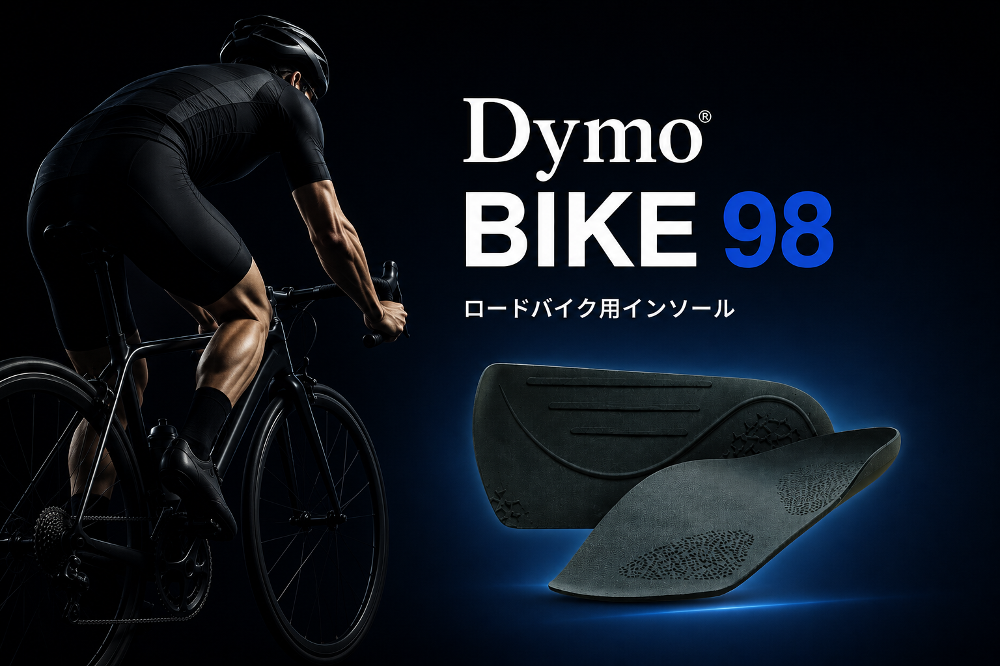
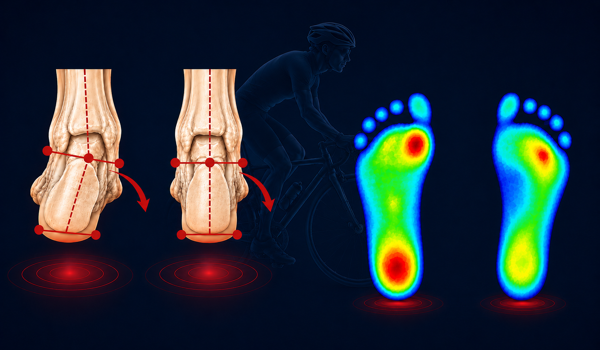
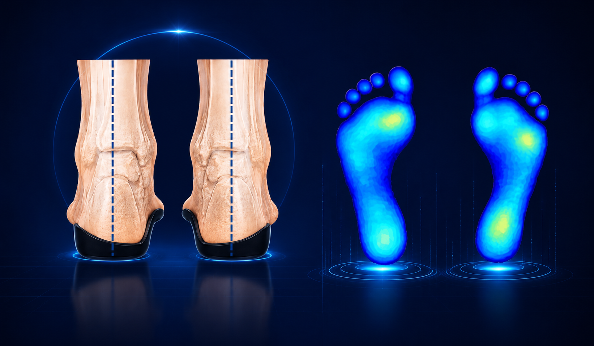
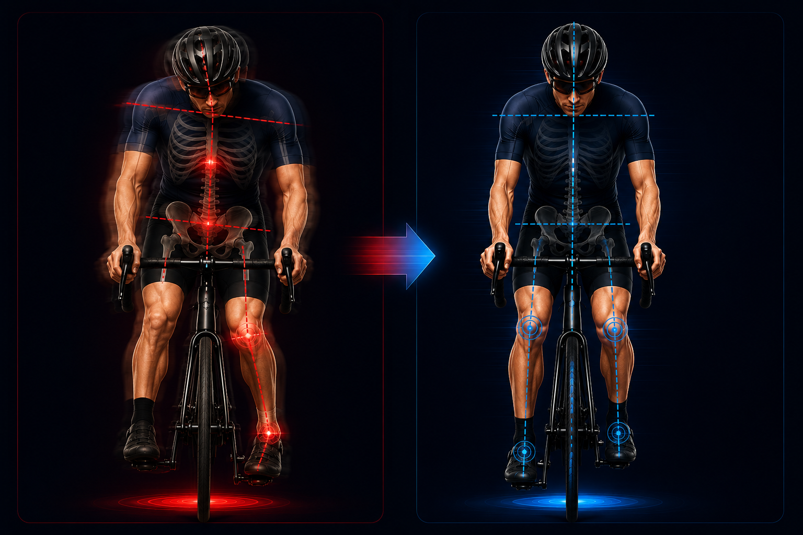
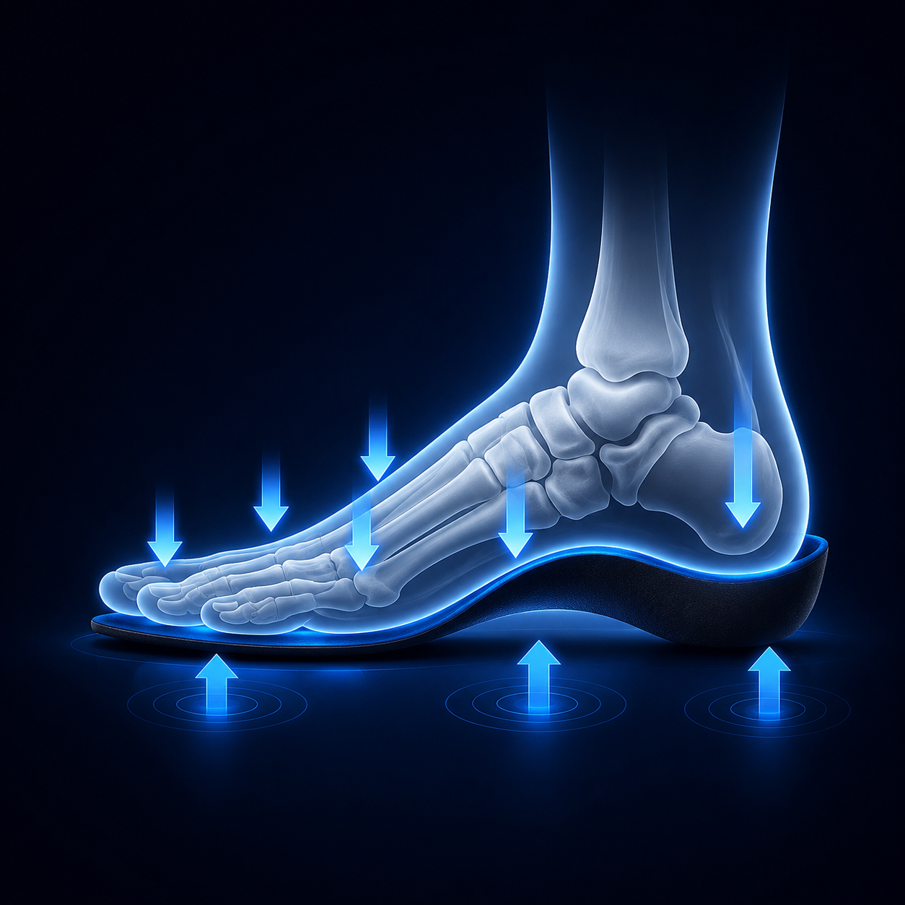
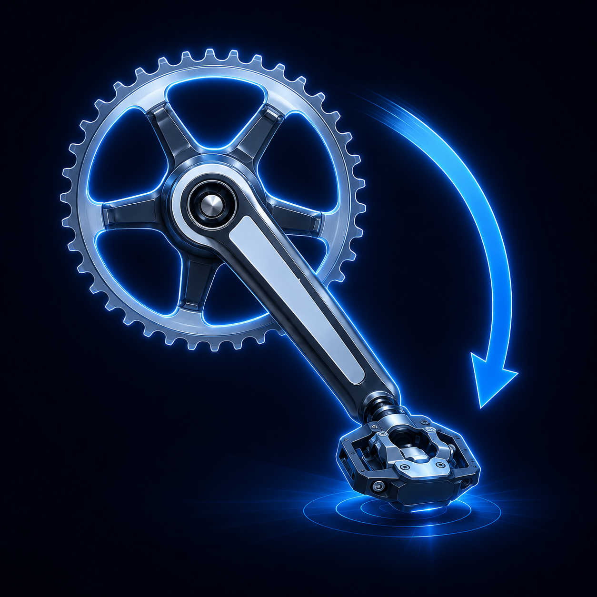
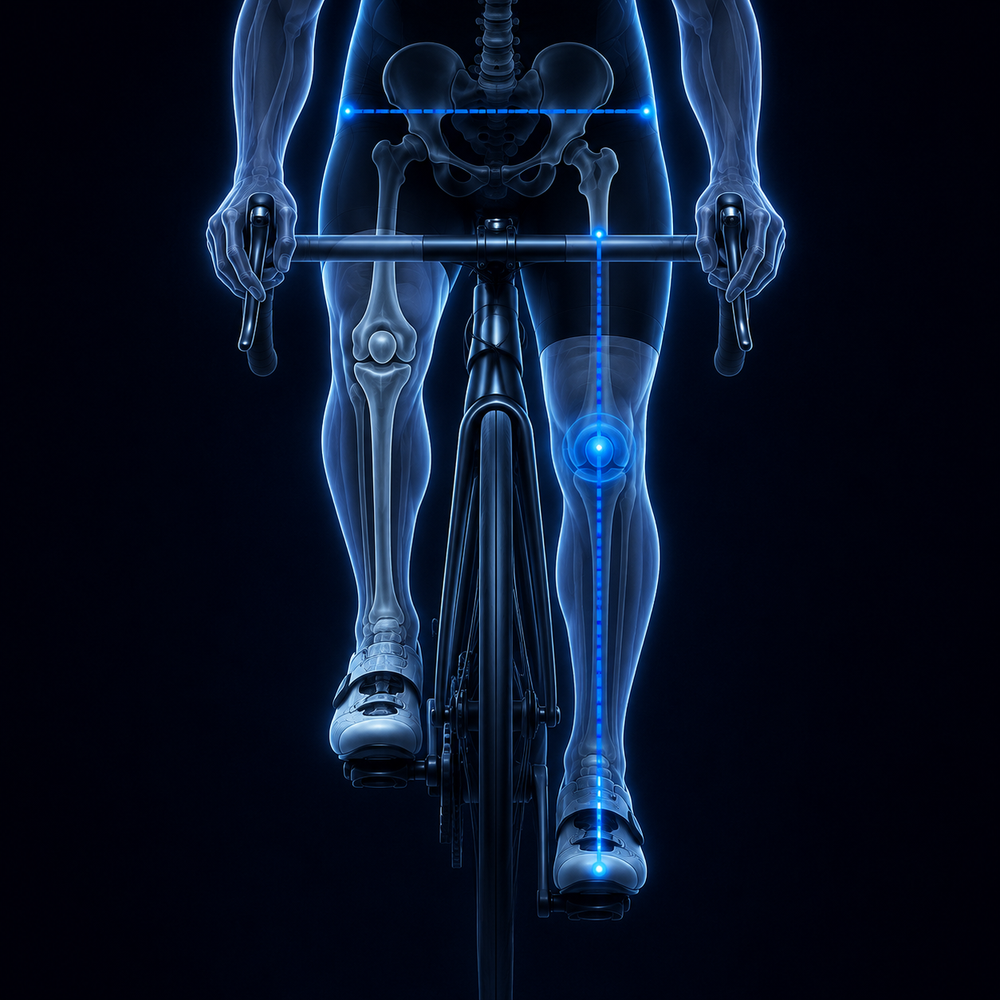
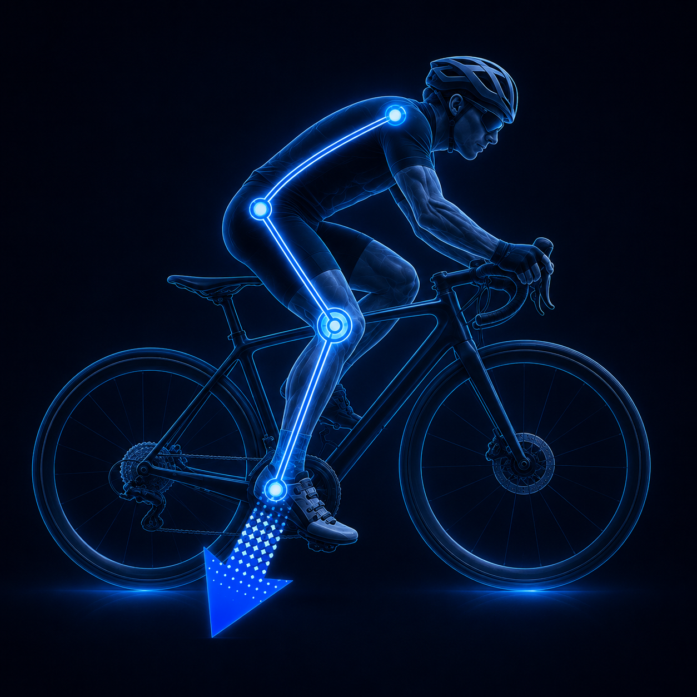
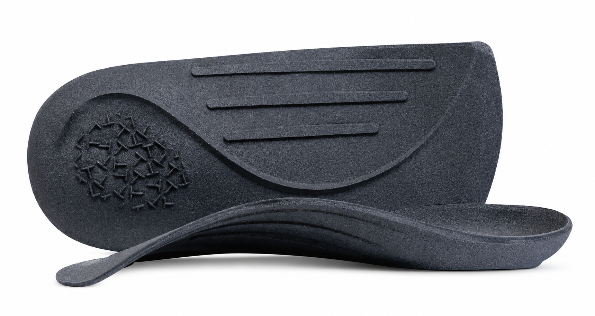
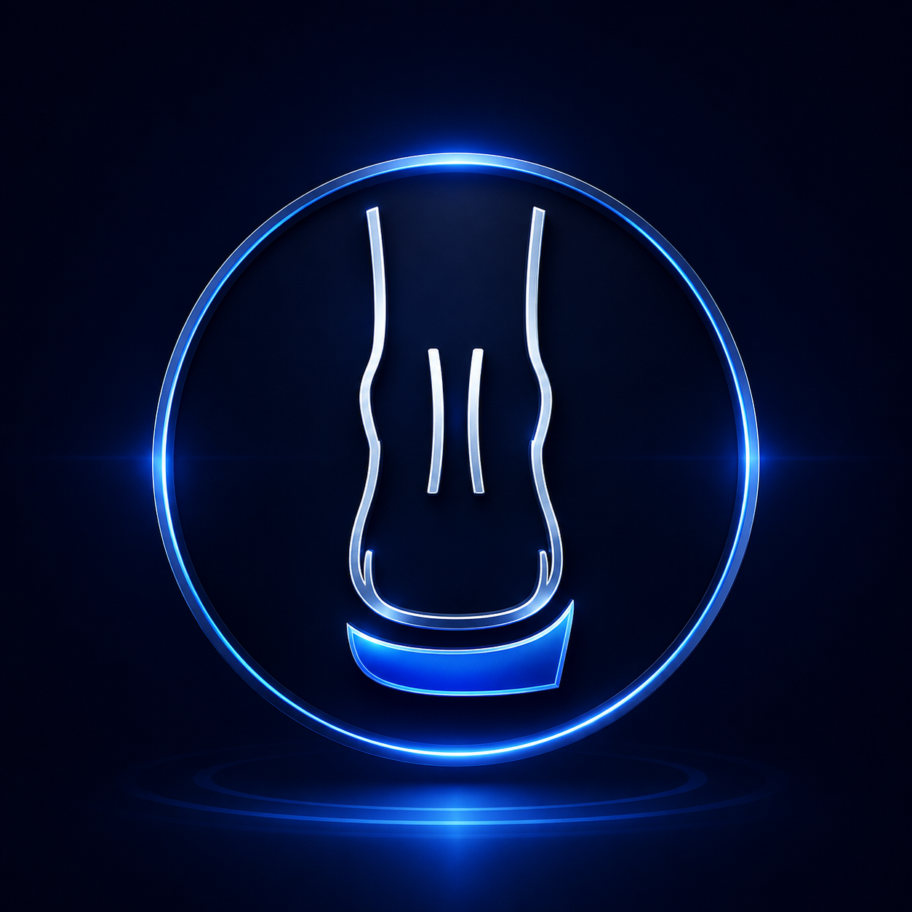

ロングライド後に膝が痛い
長時間のライド後、膝に違和感や痛みを感じる。

ROAD BIKE INSOLE
足元を整えることは、推進力を整えること。
50万件以上の足データと特許技術から生まれた、ロードバイク専用インソール。
PROBLEM
長時間のライド後、膝に違和感や痛みを感じる。
ペダルを踏み込んでも、推進力に変わっていない気がする。
膝が左右にぶれて、フォームが安定しない。
ライド後半になると脚が重くなり、思うように踏めない。
WHY
足関節や足部の傾きによって足元が不安定になると、 ペダリング時の荷重バランスが崩れ、 踏み込んだ力が分散し、本来の推進力へ効率よく伝わりません。

足元の安定性が失われることで荷重バランスが偏り、 踏み込んだ力が分散しやすくなります。
SOLUTION
Dymo BIKE 98は足元をニュートラルポジションへ導き、 膝・骨盤・上半身まで安定したフォームをサポートします。

POWER TRANSFER
足部が不安定になると、踏み込んだ力は推進力ではなくブレとして分散します。 Dymo BIKE 98は足元を安定させ、膝・骨盤・上半身まで整ったペダリングをサポートします。






PATENT TECHNOLOGY

日本・米国・韓国・台湾で特許取得。
踵外側を支える独自構造により、 足部・足関節を安定させ、 効率的なペダリングをサポートします。
MEDICAL SUPERVISION
医療法人社団 輝幸会
足のクリニック表参道
ロードバイクにおいて重要なのは、強くペダルを踏むことではなく、 生み出した力を効率よく推進力へ変換することです。しかし、足の形状やアライメントは 一人ひとり異なるため、すべてのサイクリストに最適なインソールは同じではありません。
Dymo® BIKE 98は、足の状態を分析し、複数のインソールの中から最適な一足を選定する 『パーソナルセレクトインソール』という考え方を採用しています。
私は足の専門医として、また一人のサイクリストとして、 フィッティングの出発点はフレームではなく『足』にあると考えています。
FEATURES
50万件以上の足データをもとに、ロードバイク専用形状を設計。
アーチを支え、踏み込んだ力を効率よくペダルへ伝えます。
約2mm、約40g。シューズ内のフィット感を損ないません。
SLS 3Dプリント Nylon12を採用。強度としなやかさを両立。
SIZE & FITTING
サイズ：EU 38〜44（24〜28cm）
アーチ高：2種類
厚み：2mm
重量：約40g
FOR BUSINESS
販売店・自転車ショップ・フィッティングサービス事業者様向けに、 Dymo BIKE 98の導入相談を承ります。
導入について相談する